Scrimmage → Signature
in nine months
Hsinchu, Taiwan
ranking
SSIS Scrimmage
First contact with a game we'd only read about.
Push Back was announced and we did something we'd never done in season one: we drew the whole robot before we cut anything. A scrimmage is low stakes by design — which makes it the cheapest place in the season to find out that your design is wrong.
Preparation
On screen, then in metal.
The basket concept: intake at the front, storage held high, score by tipping the whole load at once. On paper it trades cycle speed for capacity. We wanted to know whether that trade was worth it before the season got expensive.
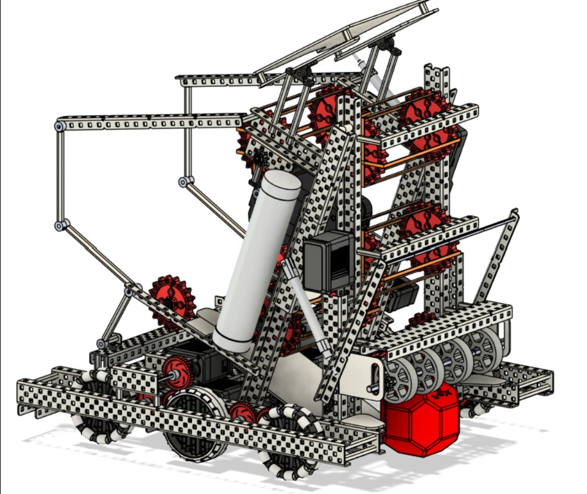
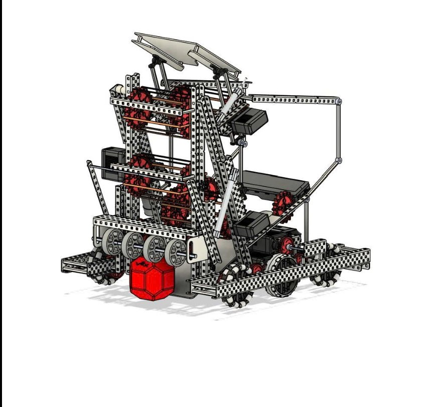
Build
Turning the model into a machine.
CAD tells you whether parts collide. It does not tell you how a chain behaves under load, how much a polycarbonate wall flexes, or how long a repair takes when you have twenty minutes between matches. That part still gets learned at the bench.
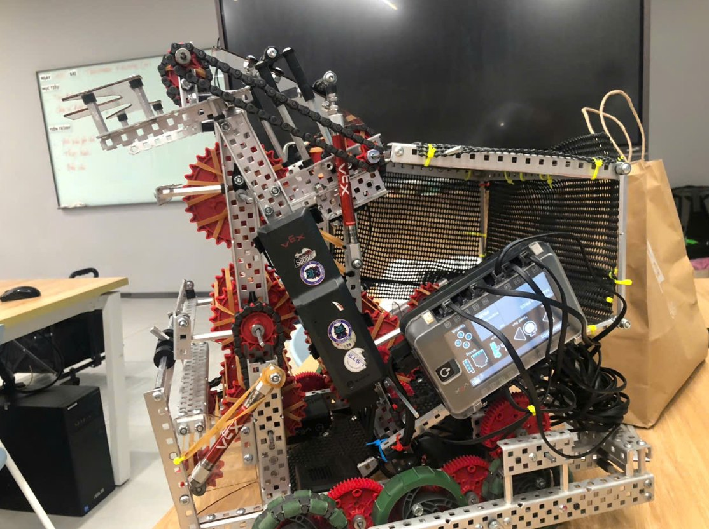
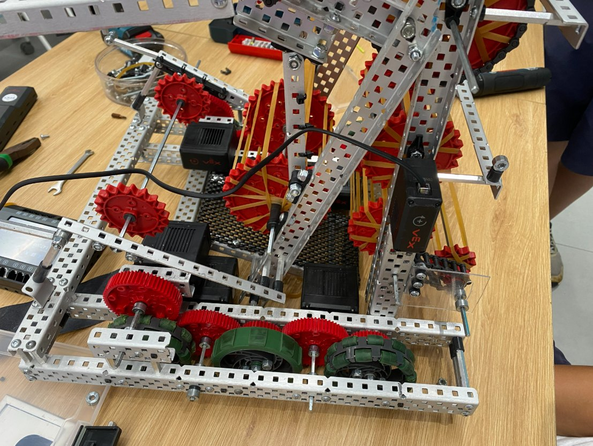
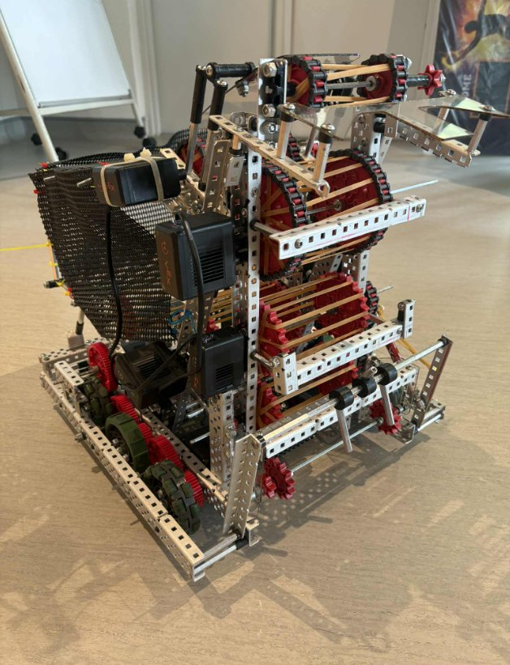
Competition
Third in quals. Then the final.
We ranked 3rd in qualification and went all the way to the final. For a robot that had never seen a real match before that morning, it was a better day than we expected — and that is exactly what made the debrief difficult.
A good result hides problems. Our capacity was genuinely strong; every time we scored, we scored a lot. But the cycle between scores was slow, and against a fast opponent a big infrequent score loses to a small constant one. On our own practice field we had never played anyone fast enough to prove it.
Winning matches is not the same as having a good design. It just means nobody has punished the bad part yet.
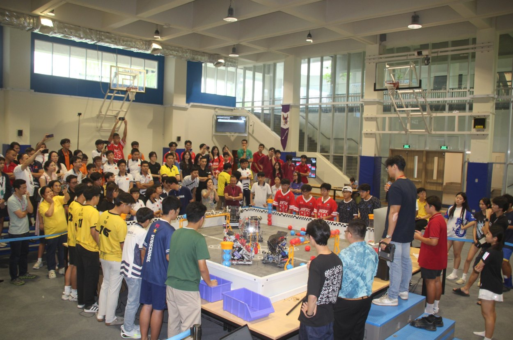
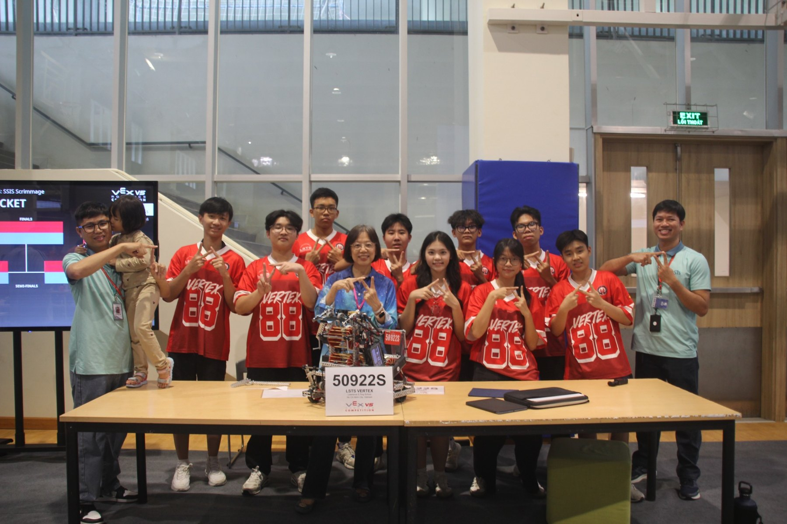
Challenge
A brand-new game, and no evidence about whether our concept could compete.
Decision
Design in CAD first, then use a low-stakes scrimmage as the real test.
Action
Built the basket bot end to end and drove it through a full tournament.
Result
3rd in qualification and Tournament Finalist.
Lesson
Capacity is not throughput. Our cycle time was the real number, and it was too slow.
Southern Regional
Taking apart the robot that made the final.
The hardest thing about the scrimmage result was that it gave us permission to keep the robot. We didn't. Between the scrimmage and the Southern Regional we pulled the machine apart and rebuilt the part the field had actually complained about.
Why rebuild
Three things we could no longer argue with.
- Cycle time. Every scoring run cost more seconds than the top teams were spending, and no amount of driver practice was going to close a structural gap.
- Height and stability. Carrying a full load high made the chassis nervous — under contact it wanted to rock, which cost us both accuracy and confidence.
- Repairability. Reaching a failed part meant removing three that hadn't failed. In a pit with fifteen minutes on the clock, that is a design flaw.
None of these were visible in CAD. All three were obvious after one tournament. That gap — between what a model predicts and what a field proves — became the thing I now design around.
Scrimmage build → Southern rebuild
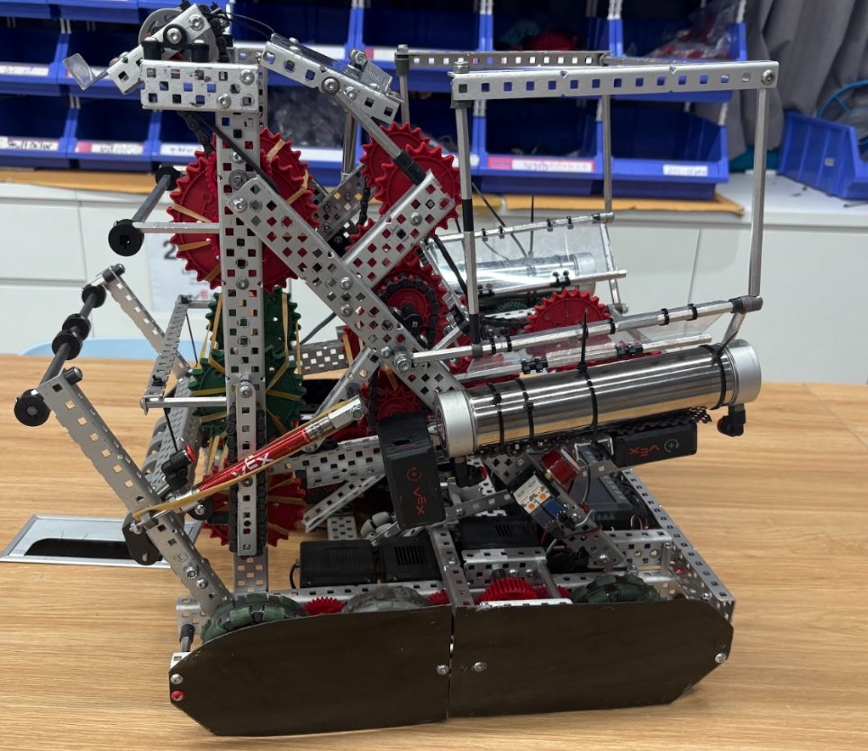
Testing
Stopwatch as an engineering instrument.
We stopped judging the rebuild by how it looked and started judging it by a number: how long one complete scoring cycle took, measured the same way every time, written down every time.
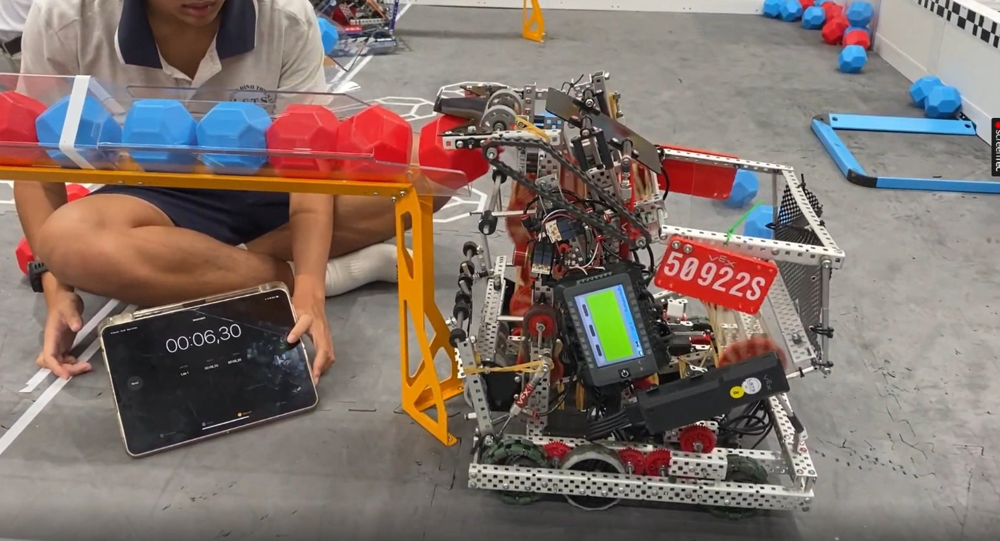
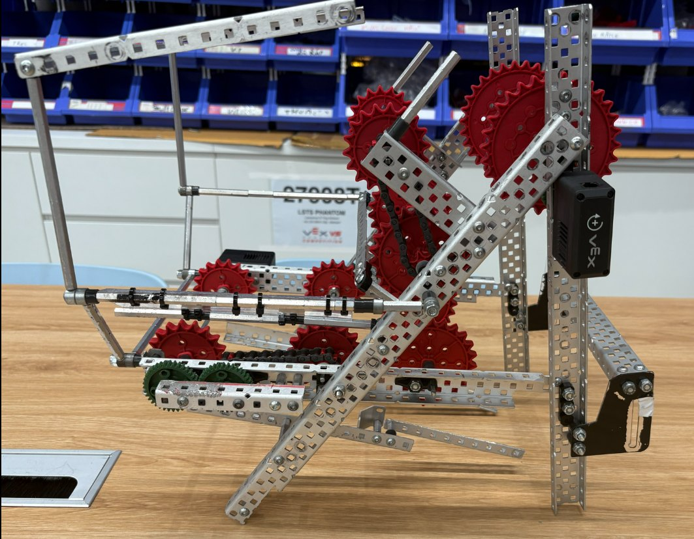
Result
Judges Award.
We didn't win the tournament. We won the Judges Award — which, for a team that had just dismantled a finalist robot on the strength of its own data, felt like the more accurate result. The award recognised the reasoning, and the reasoning was the thing we'd actually improved.
It also confirmed something I'd started to suspect: the engineering notebook wasn't paperwork we did after the build. It was the only place the argument for a rebuild could survive contact with people who liked the old robot.
Challenge
A finalist robot that was, by our own numbers, too slow to keep.
Decision
Rebuild the intake and scoring path instead of tuning around them.
Action
Lowered the machine, shortened the load path, made it serviceable, and timed every change.
Result
Judges Award at the Southern Regional.
Lesson
Measure the thing you want to improve, or you will improve the thing that is easy to see.
Taiwan Signature Event
The chapter that changed the rest.
We did not iterate on the basket bot for Taiwan. We abandoned the concept. The new machine was an S-bot — a different path for the blocks to travel, a different shape, a different set of things it was allowed to be good at.
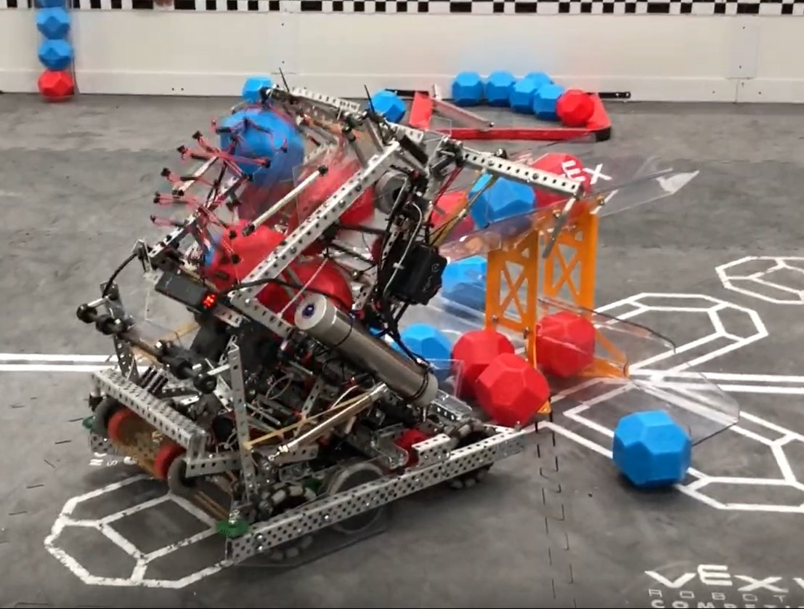
Taiwan Signature Event — the S-bot on an international field for the first time.
What changed
Basket bot → S-bot.
The basket bot collected, held, and then dumped. The S-bot routes blocks along a continuous path through the machine, so intake and scoring stop competing for the same seconds.
The rebuild wasn't a small optimisation and it wasn't comfortable. We threw away subsystems that worked. But by then we had two tournaments of evidence saying the same thing: our ceiling wasn't set by execution, it was set by the concept. You cannot tune your way past a concept.
Sometimes engineering progress isn't making the solution more precise. It's admitting the solution was the wrong shape.
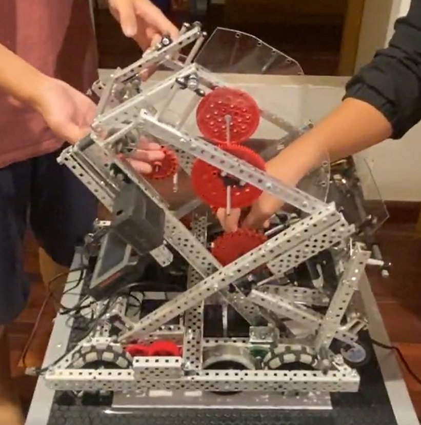
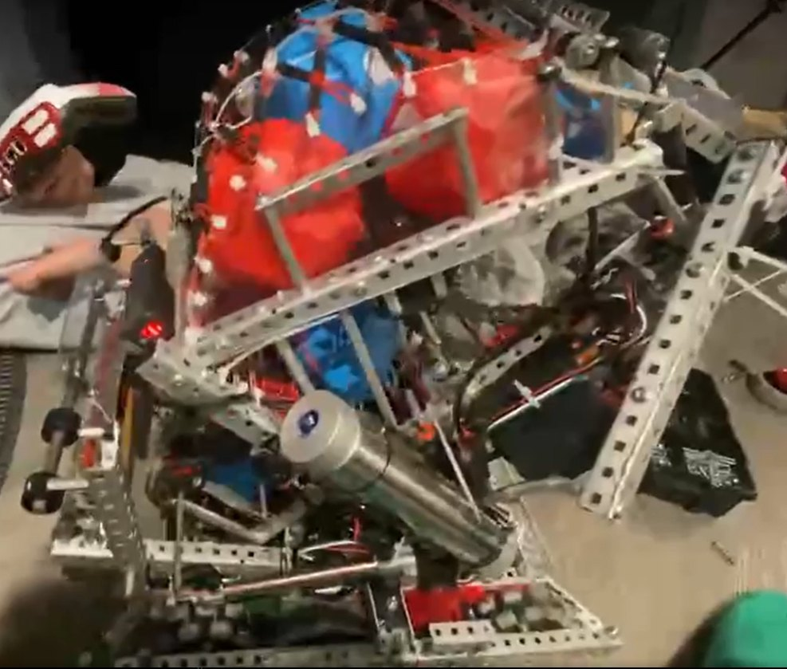
The competition
Everyone here rebuilds.
This was my first international event, and the difference wasn't that the robots were more expensive. It was how the teams around us treated their own machines.
I had assumed a strong team protects a working robot and improves it in small steps. In Hsinchu I watched teams treat their robots as temporary versions. They read match performance as engineering evidence, looked for the failure that kept repeating, and were willing to rebuild a major mechanism mid-event when the data said the original was wrong.
That reframed competition for me. A tournament isn't a test of whether your robot succeeds. It's a round of a much longer loop: design, test, analyse the failure, redesign. The teams that go furthest aren't the ones that guess right first. They're the ones that get through that loop the most times.
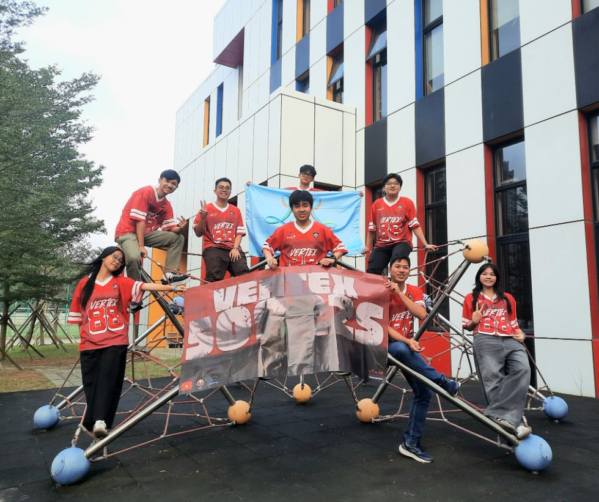
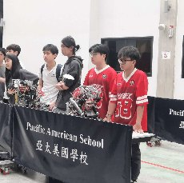
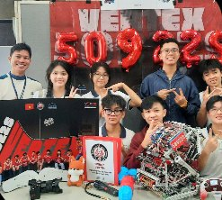
What I took home
Top 30% in Skills, and a notebook full of other people's habits.
The result was top 30% in Robot Skills — respectable for a first international outing with a robot that was three weeks old. But the result is not what I brought back. I brought back build techniques I'd watched, a way of choosing what to fix first, and a much less romantic relationship with my own designs.
- Read the failure that repeats. One bad match is noise. The same failure three times is a design brief.
- Rebuild while it still hurts. The cheapest time to change a concept is before you've won something with it.
- Build for the pit. A mechanism you can't service in fifteen minutes will eventually cost you a match.
- Strategy is a design input. Decide what you're not going to do, then design the robot that does the rest well.
Every one of those shows up in the next chapter. Taiwan is the reason the National Championship went the way it did.
Challenge
Two tournaments of data saying our ceiling was set by the concept, not the execution.
Decision
Abandon the basket bot entirely and build a continuous-path S-bot.
Action
New concept, new geometry, new drive strategy — then took it to an international field.
Result
Top 30% Robot Skills at the Taiwan Signature Event.
Lesson
Treat a working robot as a temporary version. Competition is a loop, not an exam.
Vietnam National Championship
Bringing Taiwan home.
Nationals wasn't a new engineering problem. It was a test of whether I could actually apply what I'd watched other people do — under pressure, in my own pit, on my own robot.
Applied
Four things I changed after Hsinchu.
None of these are inventions. All of them are habits I copied deliberately, then made ours.
Build technique
Tighter, better-braced assemblies with fewer single points of failure — and every high-wear part reachable without disassembly.
Strategy
Scouting before alliance decisions, and choosing a role in each match instead of playing the same game every time.
Robot design
Refining the S-bot's path for consistency rather than peak score — repeatable beats spectacular over a full division.
Match discipline
A fixed routine between matches: review what happened, log it, change one thing, test it.
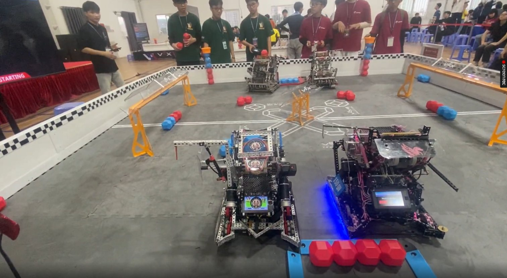
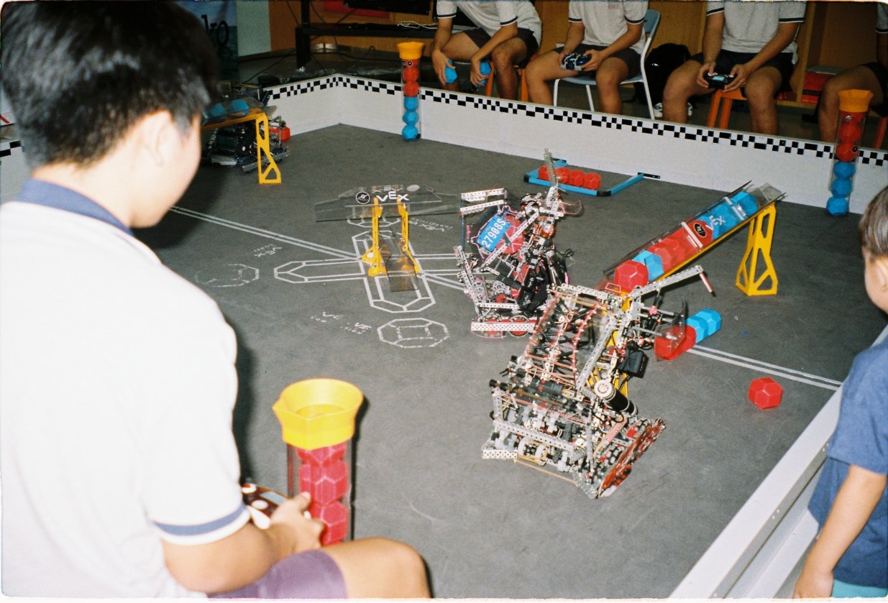
In the pit
Fifteen minutes, one change.
The rule we brought back from Taiwan was simple and hard to follow: between matches, change one thing, and write down why. When four people all have a theory and there are fifteen minutes on the clock, the temptation is to fix everything at once — and then you've learned nothing, because you can't tell which change did what.
That discipline is also what our engineering notebook is for. Not a record of what we built — a record of what we believed, what we tested, and which beliefs turned out to be wrong.
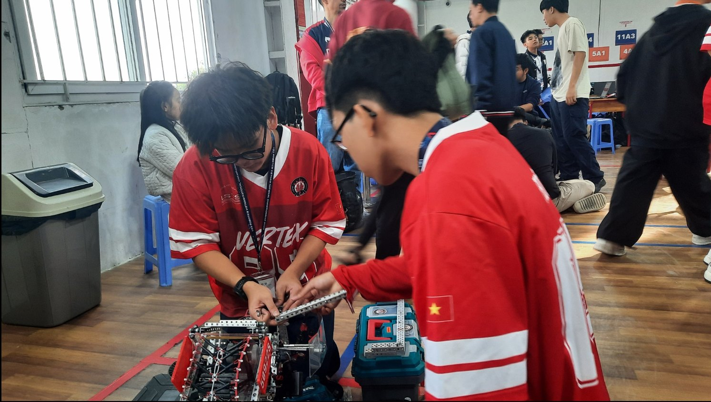
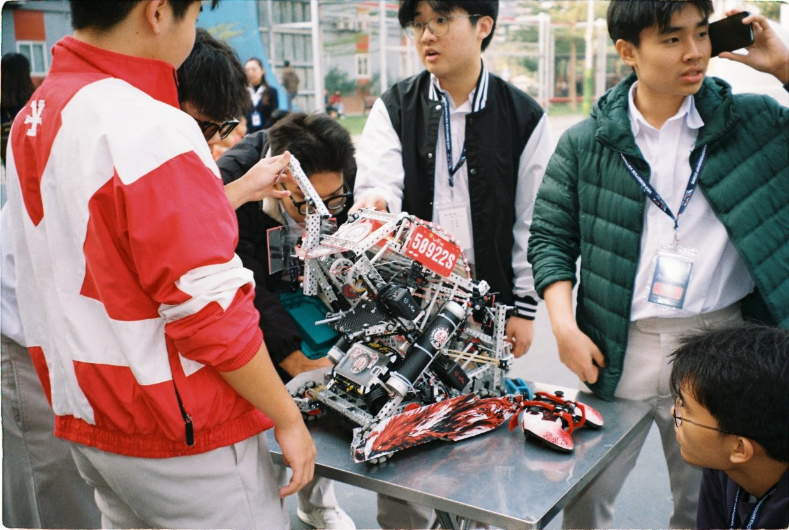
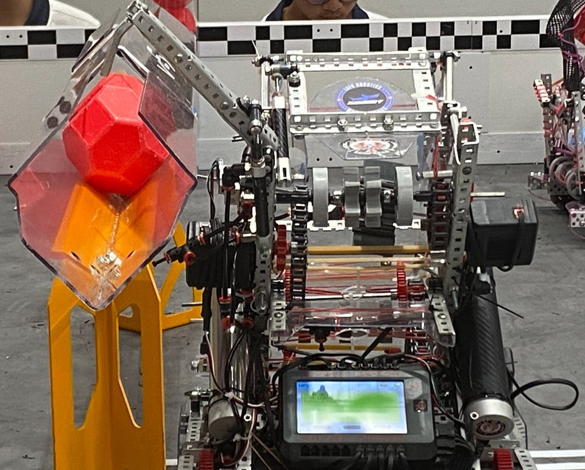
Result
Create Award. 4th in qualification.
Fourth in the division qualification rounds, and the Create Award — given for the engineering process behind the machine. Of everything in this portfolio, that award is the one I'd point at first, because it isn't a measure of how the robot performed on one day. It's a measure of whether the reasoning that produced it holds up when someone reads it back.
Two years earlier I was a first-year student who thought a missed autonomous run was a software bug. The Create Award is what that mistake eventually turned into.
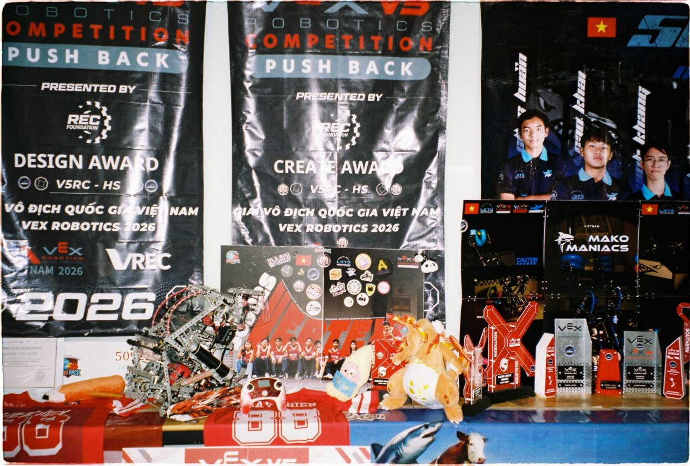
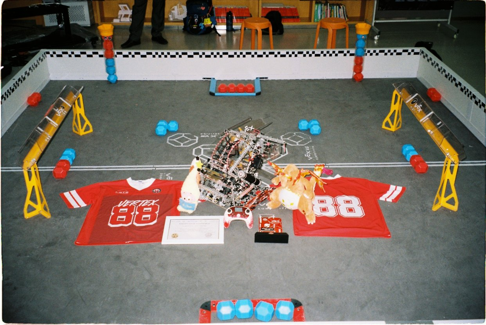
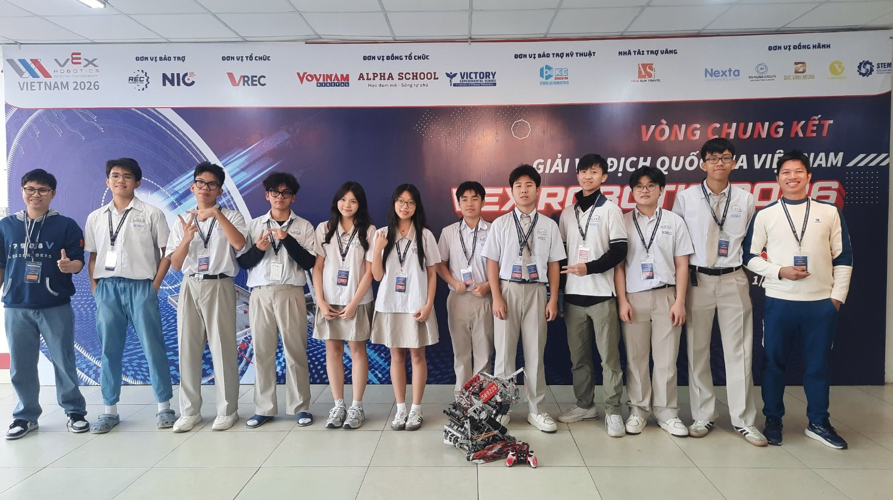
Challenge
Turning things I'd watched other teams do into things our team could actually execute.
Decision
Import four specific habits — build, strategy, design consistency, match discipline.
Action
Refined the S-bot for repeatability and ran a one-change-at-a-time routine all tournament.
Result
Create Award and 4th in qualification at the Vietnam National Championship.
Lesson
Copying a habit is easy. Keeping it under time pressure is the actual skill.
Vietnam Signature Event
We kept the metal.
We rebuilt the behaviour.
The gap between Nationals and this event was short enough that a mechanical rebuild was off the table. So we asked a different question: if we can't change the robot, what is actually limiting it?
Do not rebuild the robot. Rebuild the bottleneck.
The method
Three loops, run until the event.
No new subsystems. Three repeating cycles, each one aimed at a different part of how the robot behaved rather than what it was made of.
Code → Test → Log
Tightened autonomous routines and driver assists, ran them repeatedly, and logged the outcome of each version instead of trusting the last good run.
Plan → Simulate → Adapt
Planned skills routes on paper, walked them through on the field, and cut every step that didn't pay for the seconds it cost.
Drive → Review → Repeat
Drove, watched the match back, found the one moment that lost the most time, and practised that moment specifically.
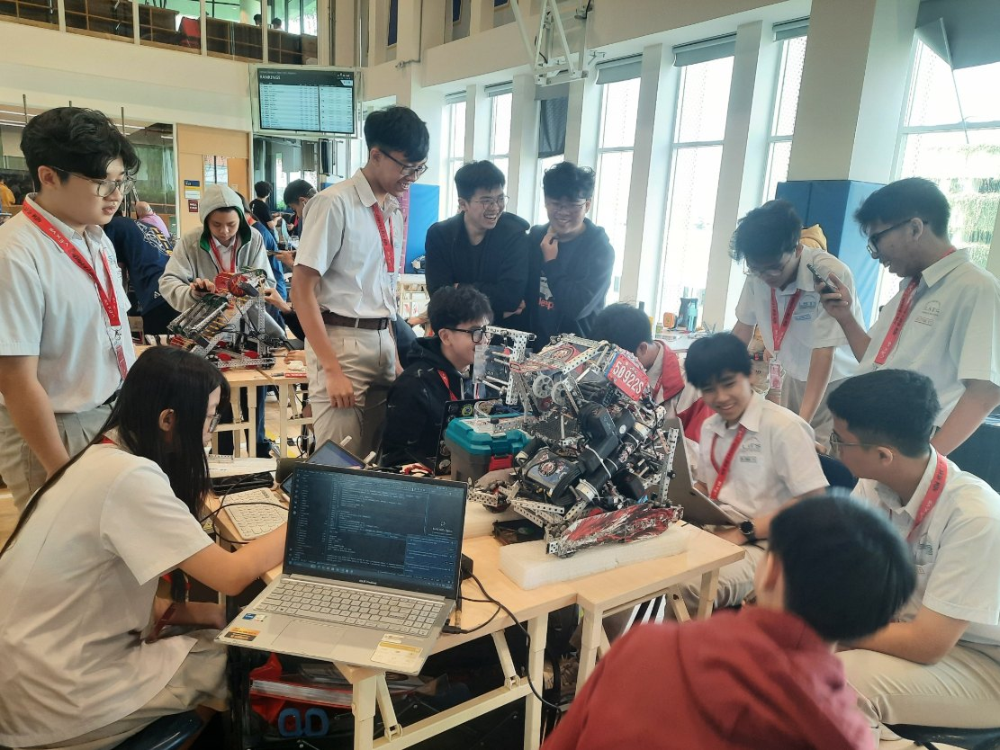
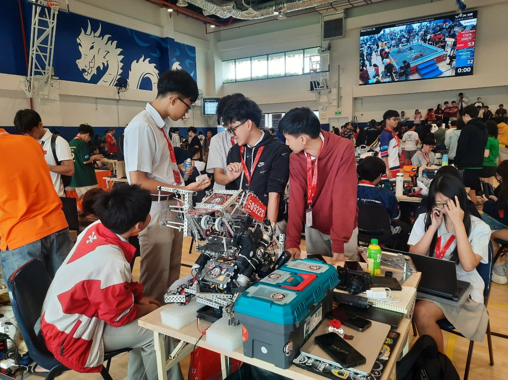
Why this worked
The limit had moved.
For most of the season the robot was the constraint. After the Taiwan rebuild and the Nationals refinements, it wasn't any more — the machine could do more than we were reliably asking it to do. The seconds we were losing were going to hesitation, to routes that were longer than they needed to be, and to autonomous behaviour that worked in the lab and wobbled at the event.
That is the whole lesson of this chapter, and it's the one I'd defend hardest. Rebuilding is not a reflex. The skill is identifying which part of the system is actually holding the result back — and this time it wasn't the metal.
Mechanical iteration. International learning. Then code, strategy and driving. Same season, three different answers to "what should I change?"
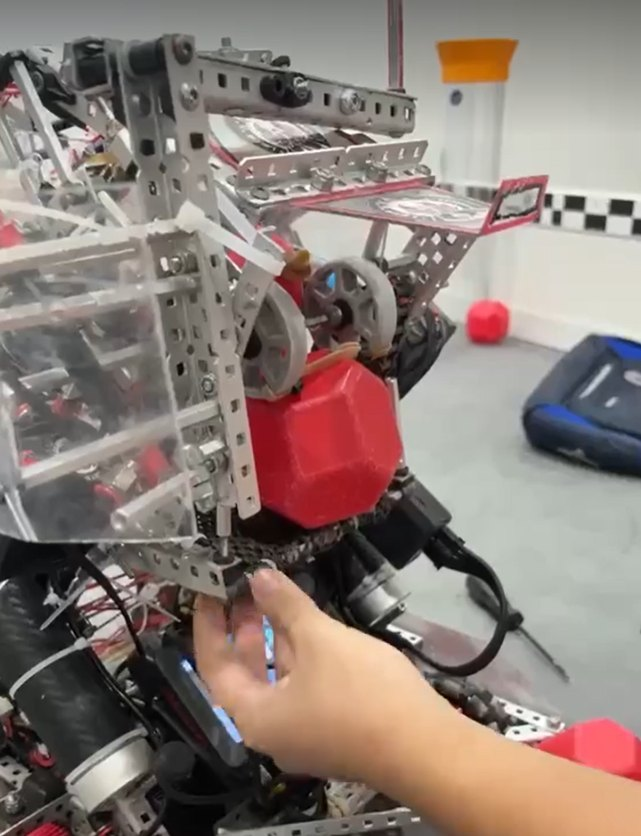
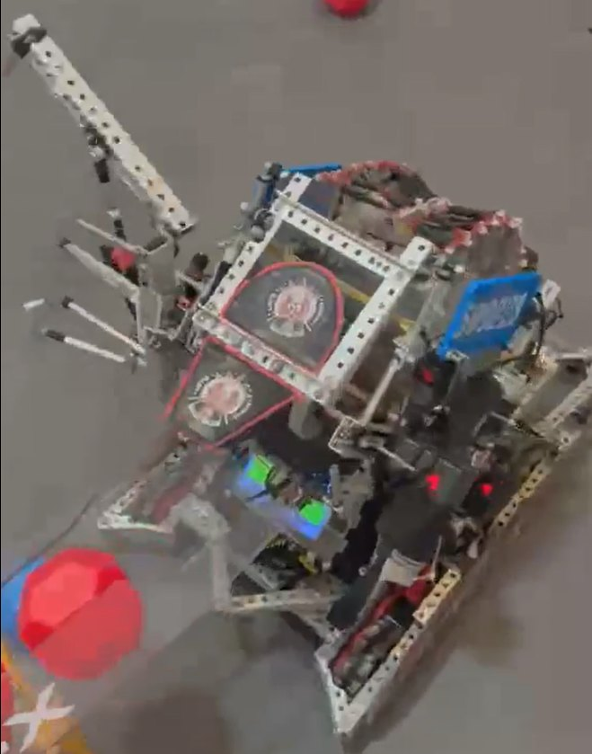
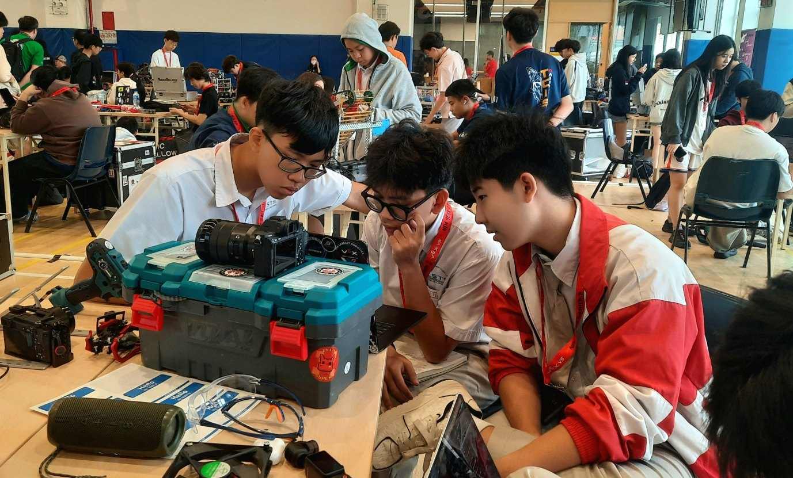
Result
Top 20% Robot Skills.
Top 20% in Robot Skills at the Vietnam Signature Event — our best Skills result of the season, from the only event where we barely touched the robot. It's the cleanest evidence I have that the season's real lesson landed.
The season started with a robot we rebuilt because it was too slow. It ended with a robot we left alone because it wasn't the problem any more.
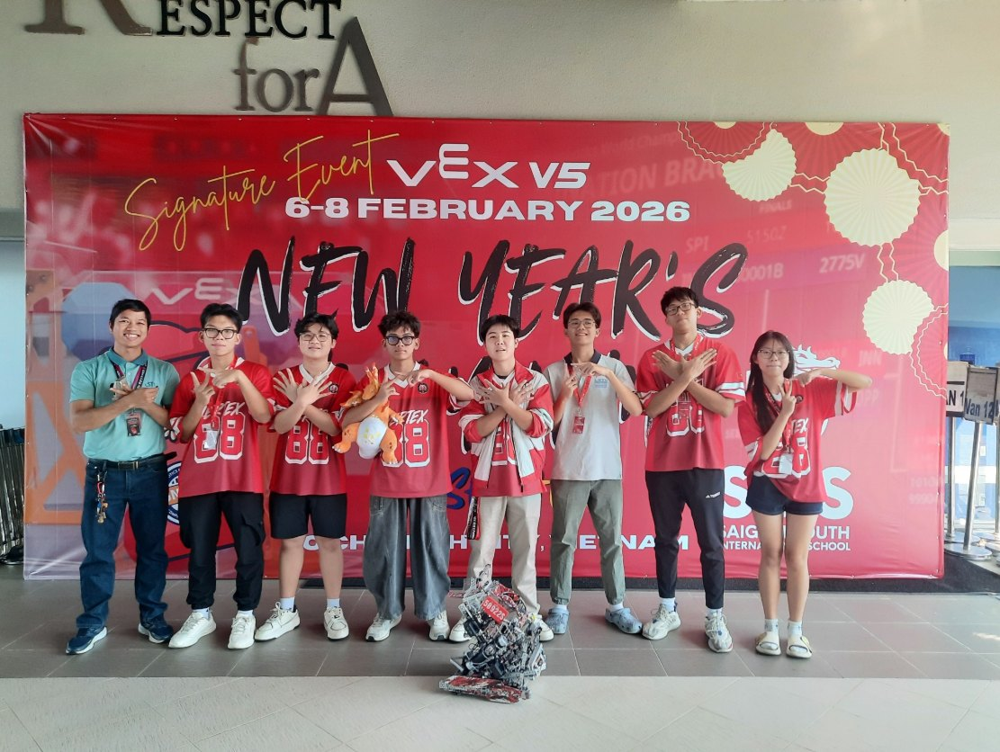
Challenge
A very short turnaround from Nationals, with no room for mechanical work.
Decision
Find the real bottleneck instead of defaulting to another rebuild.
Action
Three loops: code/test/log, plan/simulate/adapt, drive/review/repeat.
Result
Top 20% Robot Skills — the season's best Skills placing.
Lesson
Rebuilding is a tool, not an instinct. Aim it at whatever is actually limiting the result.
Season two
What the season actually taught me.
Five competitions, three robot concepts, one question asked five different ways: what should I change next?
- A good result can hide a bad design. The scrimmage final almost cost us the rebuild.
- Measure the constraint. Cycle time was the number that mattered, and we only found it with a stopwatch.
- A working robot is a temporary version. Taiwan taught me that, and it cost me a robot I liked.
- Habits beat inspiration. Nationals was won on a boring rule: one change at a time, written down.
- Rebuild the bottleneck, not the robot. The last event proved the bottleneck can be code, strategy, or me.
Season three starts with me as Team Captain — which mostly means this loop is now something I have to teach, not just run.